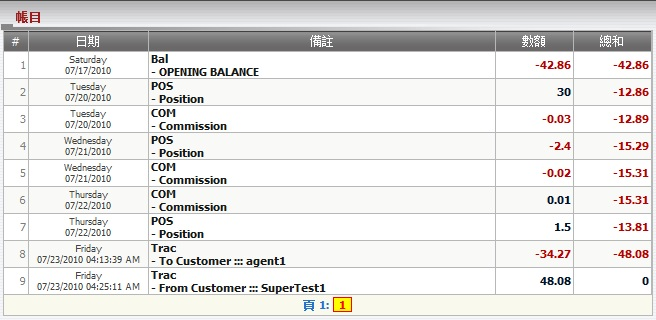

賬目
定義:
這是一個簡短的報告, 總計每天的輸贏, 佣金, 轉賬數額及幫助總代理保持追踪他/她的每日收入。

圖 1.1
如何理解報告:
從圖1.1, 總代理可以得到他/她的報告摘要。
例如:
- 星期六 07/17/2010, 為期初餘額日, 總代理至該日的總餘額為 -42.86.
- 星期二 07/20/2010, 總代理基於佔成數獲得30, 然後他/她的餘額 = -42.86 + 30 = -12.86.
- 星期二 07/20/2010, 總代理在支付代理佣金後失去0.03佣金, 然後他/她的餘額 = -12.86 - 0.03 = -12.89.
- 星期三 07/21/2010, 總代理基於佔成數輸額2.4, 然後他/她的餘額 = -12.89 - 2.4 = -15.29.
- 星期三 07/21/2010, 總代理在支付代理佣金後失去0.02佣金, 然後他/她的餘額 = -15.29 - 0.02 = -15.31.
- 星期四 07/22/2010, 總代理在支付代理佣金後得到0.01佣金, 然後他/她的餘額 = -15.31 + 0.01 = -15.31.
- 星期四 07/22/2010, 總代理基於佔成數贏額1.5, 然後他/她的餘額 = -15.31 + 1.5 = -13.81.
- 星期五 07/23/2010, 總代理轉賬34.27到agent1, 然後他/她的餘額 = -13.81 - 34.27 = -48.08.
- 星期五 07/23/2010, 總代理從supertest1收到48.08, 然後他/她的餘額 = -48.08 + 48.08 = 0.
備註: 顯示相關日期的活動。
| 備註類別 |
描述 |
| POS |
總代理佔成數. |
| COM |
總代理佣金. |
| Bal |
總代理餘額. |
| Trac |
總代理與上線及下線的轉賬. |